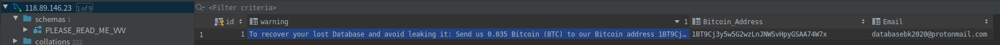

事件描述
由于我在服务器上没有什么重要数据，就没怎么关注mysql的安全问题，开放了3306端口，也没有修改账号密码。昨天突然发现gogs上不去了，在查看了日志后，发现了是mysql数据库被黑的结果。
下面还原下被黑后的现场：

看下完整的warnning：1To recover your lost Database and avoid leaking it: Send us 0.035 Bitcoin (BTC) to our Bitcoin address 1BT9Cj3y5w5G2wzLnJNWSvHpyGSAA74W7x and contact us by Email with your Server IP or Domain name and a Proof of Payment. If you are unsure if we have your data, contact us and we will send you a proof. Your Database is downloaded and backed up on our servers. Backups that we have right now: ***, ***, ***, ***. If we dont receive your payment in the next 5 Days, we will make your database public or use them otherwise.
没什么重要数据,竟然勒索我0.035比特币,换算下来2500rmb.我的天!!!
吸取教训
- 为避免该事件的发生,直接关闭了mysql的3306端口的外网访问。
- 吸取这次的教训，顺带关闭了除80、443、22等必要端口之外的端口。
- 禁止了服务器使用username和password的登录方式，改用秘钥登录。
- 改用ssh的方式连接远程数据库进行访问。
后续打算
幸运的是本次服务器上没什么重要数据，后续打算做数据库定期全量备份和增量备份，以避免下次灾难来临数据丢失。